处理器的设计步骤
通常来说，设计一个处理器，需要经过以下五个步骤：
- 分析指令系统，得出对数据通路的需求
- 为数据通路选择合适的组件
- 连接组件建立数据通路
- 分析每条指令的实现，以确定控制信号
- 集成控制信号，形成完整的控制逻辑
我们知道，现代计算机内部的电路都为数字电路，因而处理器的组成则就是这些数字电路经过精妙的组合设计完成的。处理器由控制器和运算器两部分组成。
第一步，分析指令系统，得出对数据通路的需求
以MIPS指令系统简化版本为例，我们想要实现的指令类型有：
- 无符号加法和减法
- 立即数的逻辑或
- 装载和存储一个字
- 条件分支
因此通过分析，我们的需求有如下几点：
- 存放指令的存储器，可读，地址和数据均为32位
- 存放指令地址的32位寄存器
- 同时读取两个寄存器的内容(rs和rt)
- 一组存放数据的32位通用寄存器
- 改写一个寄存器的内容(rd或rt)
- 将16位立即数扩展到32位(零扩展)
- 提供加减逻辑或三种功能的计算器
- 运算的操作数可以是寄存器或者扩展后的立即数
- 存放数据的存储器，可读写，地址和数据均为32位
- 将16位立即数扩展到32位(符号扩展)
- 比较两个数，判断是否相等
- PC寄存器支持两种自增方式，加4或加一个立即数
第二步，为数据通路选择合适的组件
我们通过以上的分析，不难得出，需要满足上述的需求，则需要以下一些组件：
- 算数逻辑单元(ALU)
- 支持运算类型：加，减，或，比较相等
- 操作数：2个32位的数，来自寄存器或扩展后的立即数
- 立即数扩展部件
- 将一个16位立即数扩展为32位数
- 扩展方式：零扩展，符号扩展
- 程序计数器(PC)
- 一个32位的寄存器
- 支持两种加法：加4或者加一个立即数
- 寄存器堆
- 每个寄存器为32位宽，共32个
- 支持读操作：rs和rt
- 支持写操作：rt或rd
- 存储器
- 一个只读的指令存储器，地址和数据均为32位
- 一个可读写的数据存储器，地址和数据均为32位
这里两个存储器实际对应了CPU中的指令和数据高速缓存，而不是内存
我们来详细看一下寄存器堆
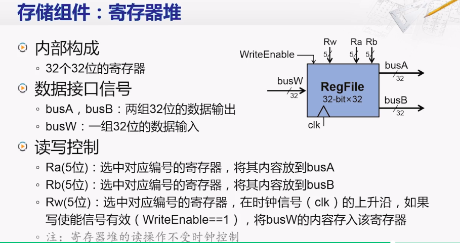
再来详细看下存储器
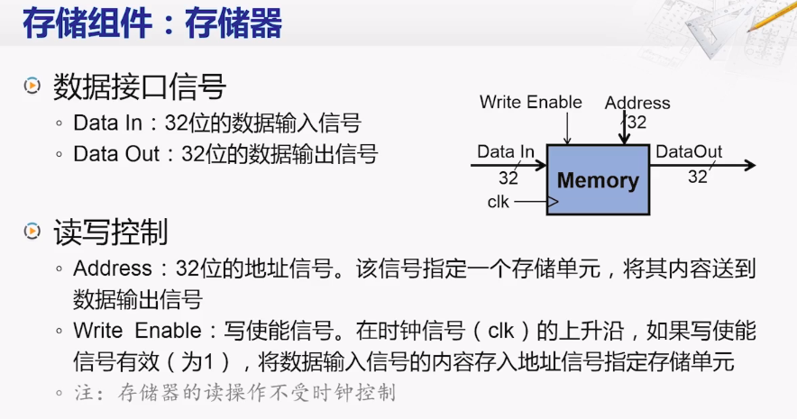
第三步，连接组件建立数据通路
建立数据通路的基本原则就是根据指令需求，连接组件，建立数据通路，而指令的需求，则分为两种，第一种是所有指令的共同需求，第二种是不同指令的各自不同的需求。
所有指令的共同需求
首先我们都需要取指令，而程序计数器的（PC）的内容就是指令的地址，用PC的内容作为地址，我们就可以访问指令存储器获得指令编码。
其次，我们需要为下一条取指做好准备，这时我们就需要更新程序计数器。这里又分两种情况，当程序顺序执行时，我们只需要将PC加四（下条指令的长度，MIPS为四字节）就可以获得下个指令的地址；当程序发生分支时，就需要将分支目标的地址更新到PC。
这样，我们将这些共同需求组合在一起，就完成了一个取指部件（IFU），以下是示意图
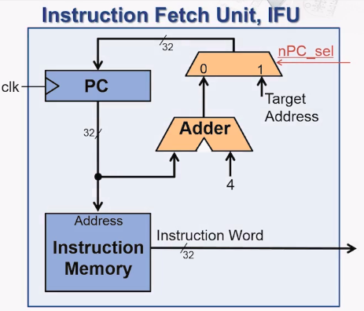
不同指令的不同需求
加法和减法指令的需求
加减法的格式大致如此R[rd] = R[rs] op R[rt]，为R型指令，如下图所示，ALUCtr和RegWr为控制信号
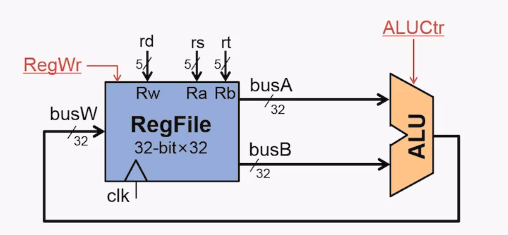
逻辑运算指令的需求
R[rt] = R[rs] op ZeroExt[imm16]，为I型指令。上图的部件对逻辑运算指令来说，又出现了三个问题：
- 逻辑运算的目的寄存器是rt而不是rd
- 立即数是ALU的输入，目前的部件只能从寄存器输入
- 立即数只有16位
为了解决这些问题，我们进行了：
- 在目的寄存器上增加了一个二选一的多选器，由RegDst进行控制
- 在ALU的一个输入上也增加了一个二选一的多选器，由ALUSrc控制
- 增加一个零扩展部件，接入多选器的输入端
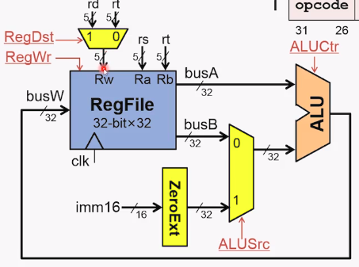
访存指令的需求（Load）
R[rt] = Mem[R[rs] + SignExt[imm16]],为I型指令。上图的部件对访存指令（Load）来说，又出现了两个问题：
- 如何进行符号扩展？目前还只能进行零扩展
- 和何处装载数据？
解决的方法也很简单，只需要将原有的零扩展部件增加符号扩展功能；并且加入数据存储器以及相应的多选器。分别由ExtOp和MemtoReg进行控制。如图所示。
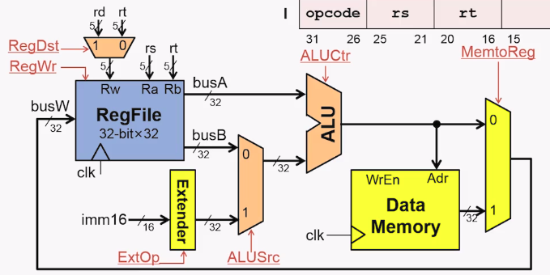
访存指令的需求（Store）
Mem[R[rs] + SignExt[imm16]] = R[rt]，为I型指令。Store指令和Load指令很相似，所以在上述部件，我们又做了如下修改，增加了一条由busB到数据存储器的线路，同时在数据存储器上新增了控制信号MemWr。
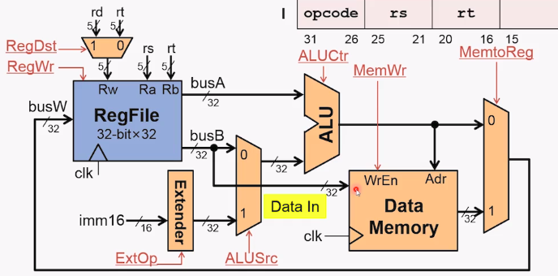
到现在为止，我们就已经完成了数据通路的基本建立。
第四步，分析每条指令的实现，以确定控制信号
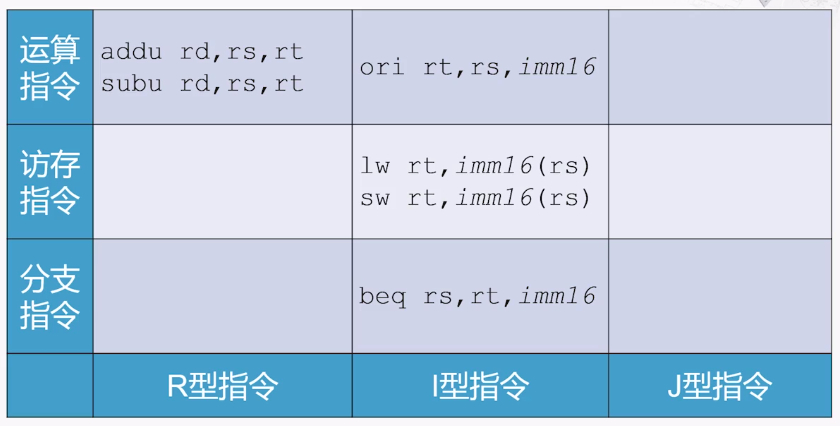
1、运算指令的控制信号
加法指令的操作步骤
1. 从指令存储器中取回指令，所有指令都有这个步骤
2. 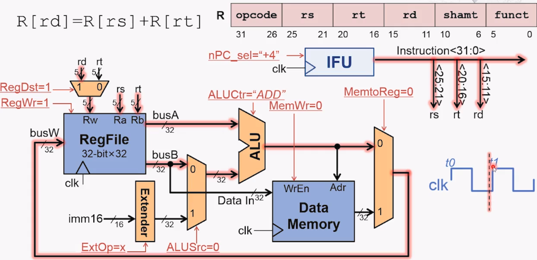
3. 更新程序计数器的内容，除了分支指令，都有此步骤
ori指令的操作步骤
一三步和加法指令一致，这里只看第二步。
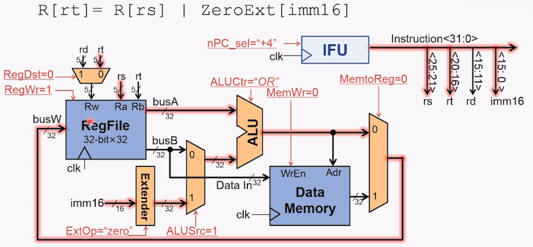
2、访存指令的控制信号
一三步和上述指令一致，这里只看第二步。
lw指令的操作步骤
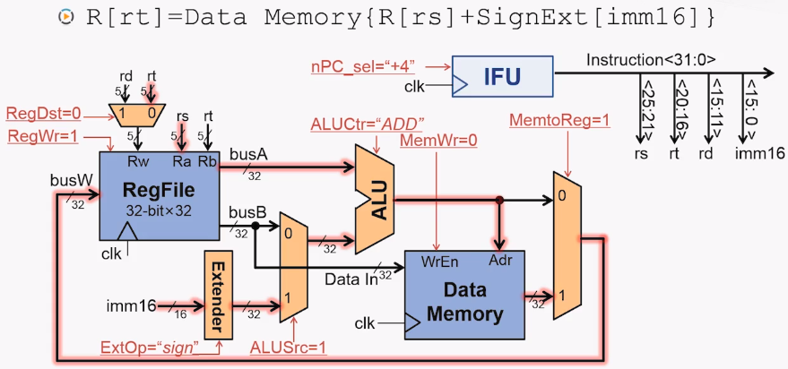
sw指令的操作步骤
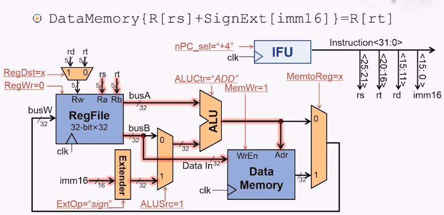
3、分支指令的控制信号
1. 从指令存储器中取回指令
2. if[R[rs] - R[rt] == 0]判断转移条件是否成立
分支指令有些特殊，因此，我们还需修改相应的部件，在ALU的计算中判断结果是否等于0，将结果送回IFU。
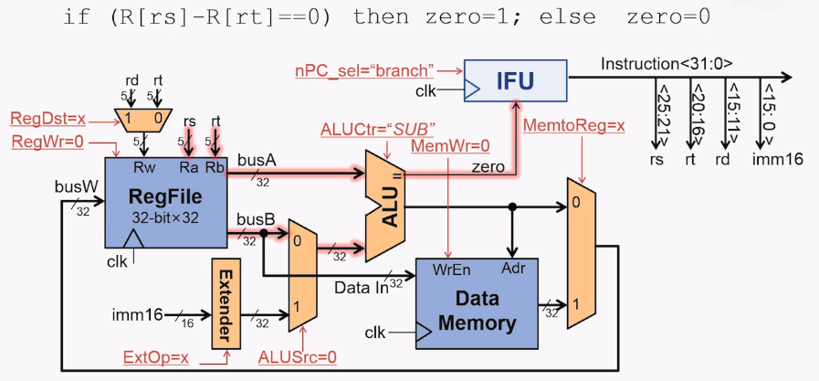
3. then PC = PC + 4 + SignExt[imm16]*4 else PC = PC + 4计算下一条指令的地址
第三步的处理方式和其他指令是不同的，也新增了很多部件，详细如下图所示
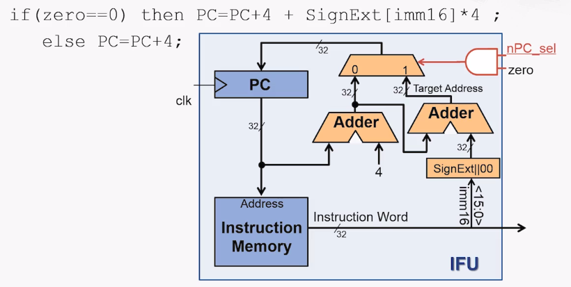
第五步，集成控制信号，形成完整的控制逻辑
到现在，我们已经确定了每条指令实现时控制信号的值，但是这八个控制信号（nPC_sel,RegWr,RegDst,ExtOp,ALUSrc,ALUctr,MemWr,MemtoReg），到底是如何实现的呢？
其实就是指令格式中我们还未使用的两部分，opcode和func域，用它们来产生各种控制信号，实现这部分的电路就叫做控制逻辑，也就是控制器。
我们将执行各个指令时各个控制信号的值列成一个表格，并且将各指令的func和opc域放在上面，如下所示：
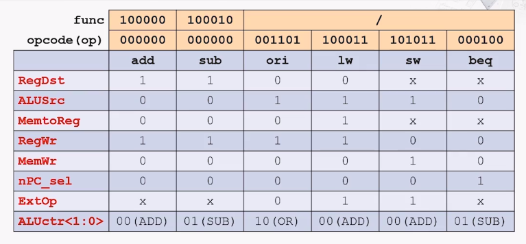
我们以每行看的话，就可以得到一个控制信号的逻辑表达式，以RegDst为例：
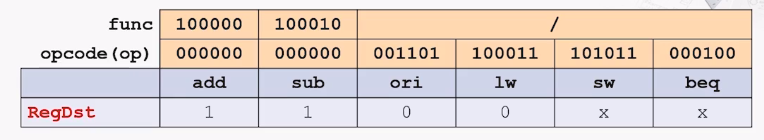
要想RegDst信号为1，那么就要将add与sub进行或操作，即RegDst = add + sub，可add与sub自身又如何生成呢？表示如下:
这样，我们就得到了RegDst的逻辑表达式，这样就可以通过画出与门和非门产生RegDst信号的电路图。同理可得其他控制信号的逻辑表达式。
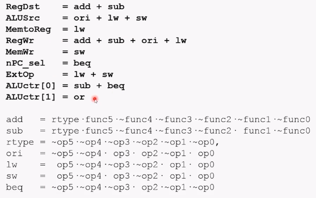
观察上图可以发现，下半部分都是进行与操作，上半部分则是进行或操作，因此我们将两部分电路分别连接起来，当输入opcode和func域后，就能自动输出控制信号了，这也就是控制器的实现。
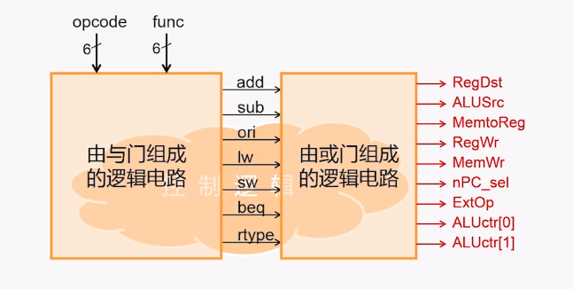
这就是简化的单周期处理器的整个设计过程，虽然简单，但却也包含了整个主要知识点。